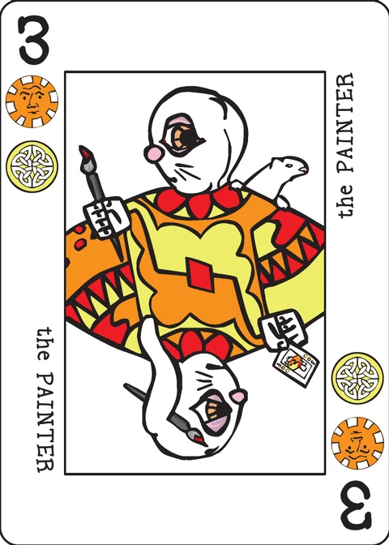

Thricewise
a fast paced game of careful timing, for 2 players in this app
Summary of the game: Every turn, you add one card to the grid. You score a point each time your card makes three in a row. Threesomes must be in rank order, all be of the same rank, or share a suit symbol.
Designed by P.D. Magnus · 2–5 players · 20 minutes · a scorepad (emulated on screen in this app) · basic 36-card deck.
Setup
Deal three cards to each player.
With 2 or 4 players, deal four cards face up to form a 2x2 grid. With 3 or 5 players, deal six cards face up to form a 2x3 grid.
Game play
At the beginning of each turn, every player selects one card from their hand and places it face down in front of them. Once everyone has made a selection, cards a revealed.
Provided all the cards are of different ranks, players may place their cards in increasing order of rank. A player with an Ace would go first, then a player with a two, and so on; a player with a Crown places last.
If two or more players play cards of the same rank, their cards are deferred. Deferred cards are left face up on the table; they may be played in a later turn. Any players whose cards are not deferred play normally, lowest rank first.
When you play a card, you may place it adjacent to any card in the grid (orthogonally or diagonally). You may not play a card on top of another card.
Scoring: If you play a card that makes three in a row (either orthogonally or diagonally) then you score points. The three cards may be a flush (three cards that share a suit symbol), a set (three cards of the same rank), or a straight (three cards in rank order). You may score for multiple times if your card makes threesomes in different directions or of different kinds.
Each threesome is worth the rank of the lowest number card in of the three. Aces and Crowns are not number cards, so a threesome is worth as few as 2 or as many as 9 points. Since three Crowns or three Aces have no number card, these sets are worth no points.
The edges of the grid: If the grid of cards is already six cards wide, then cards may not be played to make it any wider. Similarly, if the grid is six cards tall, then cards may not be played to make it taller. Until the grid reaches six cards in a direction, cards me be played to extend it on either side. As a result, the starting cards may ultimately be anywhere in the grid: in the center, on a side, or in a corner.
Deferred cards: If you have deferred cards on the table when you are able to play, play them along with your new card. You may play the new card and any deferred cards in any order you please.
Drawing cards: After everyone has played their card (or set it aside because it was deferred) each player draws a card if there are any left in the deck. If there are not enough cards left for everyone to get one, then nobody draws.
Game end: Ordinarily, the game continues until the are cards fill a 6x6 grid and ends immediately when the 36th card is played. If players have deferred cards in the final turns or if the card do not deal out evenly, then the game ends after the turn in which players play the last cards from their hands.
Example
Example: You play the Crown of Suns, with the 8 of Moons and Suns and 9 of Moons and Suns already in place. It is worth 8 for the Suns flush plus 8 for the 8-9-Crown straight; a total of 16 points.
Example: You play the Soldier (5 of Daemons and Crowns) with the other cards as shown on the wiki. You score 4 for the Daemons flush, 4 for the Crowns flush, and 5 for the set of fives; a total of 13 points. Note that both flushes use the same cards (the 4-5-8) but they make a flush in both suits.
Credits
Design: P.D. Magnus.
Playtesting: Cristyn Magnus, Joe Levy, Jason Mutford, Karen Traite, Gil Hova, Maya Kiehl, Josh DeBonis, Joe Fritz, Dan Purdy, Doug Hoover, Dean Howard.
Note on this implementation
Two players, one device: the app plays exactly two players. Simultaneous choice is handled by the pass screen: Player 1 picks a card behind the screen and lays it face down, the device is passed, Player 2 picks — and only then are both cards revealed together and played out. No screen ever shows one player's pick to the other before that reveal.
Grid coordinates: the grid is a floating 6x6 window. The dealt 2x2 may be extended on any side while its bounding box stays within six by six, exactly as the wiki describes; the app redraws the window after every card, so the starting cards end up wherever they were played.
Straights: "three cards in rank order" is read as three consecutive rank values with Ace 1 and Crown 10 (the wiki's 8-9-Crown example), with no wrap-around; three equal ranks are a set and never also a straight. A line sharing two suit symbols scores a flush for each shared suit (the wiki's second example), and each kind found on the same three cards is paid separately, always at the rank of the lowest number card among the three (0 if there is none).
Deferred cards: if both players select the same rank, both cards are deferred, face up in front of their players, and the turn scores nothing. A deferred card is laid on your next able turn, after your new card (the wiki lets the player order them freely; the app uses new card first, then deferred cards oldest first). If both players' last cards are deferred, the game ends there and those cards are never played.
Ending: the game ends the moment the 36th card is laid, or at the end of a turn in which either player's hand emptied. Equal scores are a tie. The scorepad, the dice-free "roll" of the deck and the records are all kept on this device.
These rules are copied from the Thricewise page of the Decktet wiki (page revision 35, 19 July 2017) so they can be read offline, under the wiki's CC BY-NC-SA 3.0 licence. Cards by P.D. Magnus, same licence.
Further reading: Thricewise at BoardGameGeek